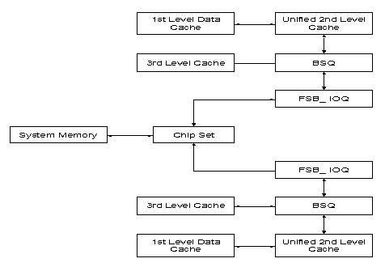

关于总线事件与内存事件关于总线事件与内存事件
关于总线事件与内存事件关于总线事件与内存事件本主题介绍多款奔腾(R) 4 与英特尔(R) 至强(TM) 处理器事件的工作机理，对于处理内存访问与总线活动管理的软件性能的分析，这些事件非常有用。
为正确解释与总线事件相关的事件计数，理解事务大小、各个项目何时在不同的队列中分配、以及分区和预取如何影响计数等项内容会比较有帮助。
下面的结构图简要显示连接到前端总线子系统中 IOQ 单元以及“总线序列队列”(BSQ) 单元（同 IOQ 接口）的各个子系统。图示中是一个双向 SMP 配置。

一级缓存未命中与写回（也称作核心引用）导致对二级缓存的引用。BSQ 将要满足的处理器核心或预取器请求存放到前端总线 (FSB) 上，或本地 XAPIC 中。如果三级缓存是片内集成的，则 BSQ 也存放二级缓存的写回请求（收回的污损数据）。FSB 的 IOQ 存放已进入前端总线的请求。下面讨论的许多事件均衍生自 IOQ_allocation 与 BSQ_allocation、IOQ_active_entries、BSQ_active_entries、BSQ_cache_reference，所有这些在 IA-32 英特尔体系结构软件开发人员手册 第 3 卷第 3 卷中均有记述。
核心引用名义上是 64 字节，这是一级缓存线的大小。更小的大小被称作部分，例如，不可缓存与写入组合读取、不可缓存、直写式与写保护式写入，以及所有的 I/O。写回锁、数据流存储，以及写入组合存储既可以是完整的缓存线，也可以是一部分。部分与缓存引用无关，它们同非缓存数据关联。与此类似,写回（由于收回污损的数据）及 RFO （由于程序存储为取得所有权而进行的读取）与非缓存数据无关。
下面基于事件的来源（IOQ_allocation、BSQ_allocation、IOQ_active_entries、BSQ_active_entries 或 BSQ_cache_reference）摘要列出不同事件中统计引用的粒度：
由于程序加载而进行的读取
BSQ_cache_reference：128 字节未命中，64 字节命中
BSQ_allocation：128 字节命中或未命中，部分的命中或未命中更小一些
BSQ_active_entries：64 字节命中或未命中，部分的命中或未命中更小一些
IOQ_allocation、IOQ_active_entries：64 字节，部分的命中或未命中更小一些
由于程序写入而进行的读取 (RFO)
BSQ_cache_reference：64 字节命中或未命中
BSQ_allocation：64 字节命中或未命中，部分的命中或未命中更小一些
BSQ_active_entries：64 字节命中或未命中，部分的命中或未命中更小一些
IOQ_allocation、IOQ_active_entries：64 字节命中或未命中，部分的命中或未命中更小一些
写回（污损收回）
BSQ_allocation：64 字节
BSQ_active_entries：64 字节
IOQ_allocation、IOQ_active_entries：64 字节
IOQ 分配的计数可能超过相应的 BSQ 分配的计数，这有多种原因，其中包括：
部分：在 FSB IOQ 中，任何小于 64 字节的事务会分成一到八个部分，每个部分都作为一个八分之一字节块单独统计。如需查看适用此结论的事件的列表，请单击下面的按钮。在 BSQ 中，部分的分配计为一。

不同的事务大小：非部分程序加载请求在 BSQ 中的分配每 128 字节计为 1，在 FSB IOQ 中的分配每 64 字节计为 1。对于 FSB IOQ 与 BSQ_allocation，RFO 的分配每 64 字节计为 1。
重试：如果芯片组要求重试，每重试一次 FSB IOQ 分配计为一。
这里有两种值得注意的情况，可能存在没有 FSB IOQ 分配的 BSQ 分配。第一种是 UC 读取与写入本地 XAPIC 寄存器。第二种情况是，如果缓存线从二级缓存中收回但在片内集成的三级缓存中命中，则分配一个 BSQ 项目，但不需要任何 FSB 事务，且因此在 FSB IOQ 中没有分配。对于 FSB IOQ 与 BSQ，写回 (WB) 内存类型写入事务的数量差异可能是这种情况发生频率的一种指示。对于很少写入三级缓存的应用程序来说，这种情况不大可能发生；当然，没有三级缓存时，这种情况根本就不会发生。
处理器总线访问事件与处理器非预取读取事件之间的差异名义上是硬件预取的数量。
 备注
备注对于 CPUID 编号在 0xf07 之后的情况，BSQ_cache_reference 事件中不统计硬件预取。
下面几段介绍基于奔腾 4 处理器性能监视事件 "BSQ_cache_rerference" 的多个衡量尺度（或事件），该事件在“IA-32 英特尔体系结构软件开发人员手册”第 3 卷中有记述。这些事件有：
作为二级缓存与三级缓存（如果有）的一个相对有效性指标，BSQ_cache_reference 可能很有用处。在奔腾 4 与英特尔至强处理器中，不应该使用它计算缓存命中比率或缓存未命中比率。
BSQ_cache_reference 事件不区分程序读取与写入未命中。未命中的程序写入必须获取剩余的缓存线，并合并新的数据。这样的要求称作是所有权读取 (RFO)。对于 BSQ_cache_reference 硬件，程序读取与 RFO 看起来都像是数据总线读取，并且也就是这样统计的。
BSQ_cache_reference 事件可能会遭遇观察到统计过量或不足的情况。正如上文所述，引用是基于 BSQ 分配的。从而，读取未命中通常每 128 字节缓存线 BSQ 分配统计一次（不论引用一个还是两个扇区）；但读取与写入 (RFO) 命中与大多数写入 (RFO) 未命中，则每 64 字节缓存线统计一次，即核心引用的大小。这使得读取未命中的事件计数同读取与写入 (RFO) 命中与写入 (RFO) 未命中的事件计数相比，像是多统计了两倍。这个粒度上的不匹配并不总是能纠正，使得将程序未命中与程序命中关联起来变得更为困难。如果用户知道 128 字节缓存线中的两个扇区总是在彼此之后很快引用，则可以将未命中计数调整到 64 字节的粒度，从而将读取未命中的数量翻倍。
预取本身不作为命中或未命中统计，CPUID 编号为 0xf21 的奔腾 4 与英特尔至强处理器就是这样的情况。不过，CPUID 编号为 0xf07 的奔腾 4 处理器及更早版本的处理器存在这样的问题：已经预取的缓存线读取除作为未命中统计外，还作为命中统计，从而使得命中的统计发生过量现象。
对于写回内存型，FSB IOQ 指出的非预取读取事务数量是由加载或 RFO 导致的最外层缓存未命中数量的很好近似值。
“高级总线”类别中的许多事件提供各种正在进行的总线事务的衡量尺度信息。这些尺度名义上衡量的是进入 BSQ 的未命中的端到端延迟，也就是，用于处理器中所有单独事务的 BSQ 项目的分配到取消分配持续时间的累计和。它们可以除以相应的事务数量尺度（统计分配数量），以大概估计每个事务的平均延迟。不过，因为整个事务必须在取消分配前完成，该估计值可能会明显高于取得随需获取（例如加载）的第一个数据块所需的周期数。该延迟包括取消分配开销，以及获取另一半 128 字节缓存线的时间，这是在预取邻近的扇区时调用的。由于邻近扇区的预取优先级小于随需获取，所以有这样一个很大的可能：在利用率很高的系统上，邻近扇区的预取必须等到该处理器的下一个总线仲裁周期。
现行总线事务尺度的用户可通过采用它们进行所有事务的 BSQ 延迟相对比较而获得最佳数据。希望进行逐周期或逐类型分析的用户请注意，对于现行 UC 块读取与现行部分写入 WC 尺度，已知此事件并不精确。所有 BSQ 延迟的相对变化应视作总体内存性能已发生改变的指示。在测得的 FSB 延迟中，这种内存性能改变可能会得到反映，也可能得不到反映。
对于集成三级缓存的奔腾 4 与英特尔至强处理器版本，会给所有的二级写回（更换的缓存线）分配 BSQ 项目，而不只是成为总线访问的那些（也是三级未命中）。对于在二级缓存中频繁失误（未命中，或预取很多），却在三级缓存中命中的负载，这可以降低测得的 BSQ 延迟平均值。由于这样的引用，所有 BSQ 项目都将成为总线事务，因此，此效果不大可能是未命中所有片内集成缓存的负载的因素。
备注统计 BSQ_allocation 与 BSQ_active_entries 的粒度可能会不同，从而导致对于非部分程序加载，统计的延迟量可能会超出两倍。